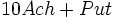

De: La Frikipedia, la enciclopedia extremadamente seria.
De: La Frikipedia, la enciclopedia extremadamente seria. De: La Frikipedia, la enciclopedia extremadamente seria.

|
FRIKIPEDIA QUIERE QUE ESTA DEFINICIÓN
PASE A SER UN ARTÍCULO FRIKIPÉDICO La información contenida en este artículo es una mínima parte de su jugo total, así que ponte los guantes, saca el tupperwere y empieza a exprimir el tema. Si lo haces serás recompensado con una galleta en almíbar y algo más. |
Es ese bote del baño que solo cojes para echar en la coca cola curarte las heridas graves y que escuece de cojones . Se llama así porque en el 96 causó una guerra entre los países más ricos del mundo. Poco después se descubrió que no era un elemento, sino un compuesto y que era conformado por alcohol (Ach) y el elemento Gay (Put)  y se descubrió que las personas que ingerían más de 10 litros diarios terminaban siendo homosexuales, lo cual causó que este producto se dejara de consumir.
Por cada litro de este 1 ml es de Put y el los otros 999 ml de alcohol puro. Sin embargo es de un color transparente que en el Sol se ve azul, en la sombra verde, consumiéndolo morado y cuando estás en el acto conyugal se ve rosa pasión.
En 1845, el científico nuclear britanico británico Johaness Pierce Long Fellow, tratando de hacer una bebida que reuniera a la familia, te causase felicidad, no tuviera efectos secundarios y fuera barato, pero al probarlo se convirtio en un Cani asi que no termino con su producto por el daño cerebral del reggaeton entonces nadie pudo completar su trabajo.
Pasaron muchos años antes de que se popularizara, ya que en ese tiempo era legal la marihuana, la cocaína, el LSD y muchas cosas mas, entonces este brebaje maravilloso no le apetecía a nadie, ya que para un dolor de muelas te daban heroína o a los asmáticos les daban cocaína. Solo la alta aristocracia lo tomaba, ya que era muy caro obtenerlo y además era muy exotico.
En 1920, un grupo de aguafiestas hicieron que fuera ilegal el alcohol (manufacturacion, venta, consumo, transporte) y este maravilloso producto fue largado al olvido, pero los caballeros templarios junto con los reptilianos protegieron la formula para así en el futuro, cuando dominen el mundo celebrar con el alcohol 96°, pero como se vera despues, ellos son de buen corazón y regalaran la formula para que los demás seamos felices y nos arrodillemos ante ellos y tienen la esperanza que así algún día los querramos como ellos nos quieren.
El 20 de octubre de 1996 Hitler, Bush, Jebús, Platón y Sub-Zero se reunieron y comenzaron a jugar monopolio, a lo cual Jebús dijo que queria tomar algo y procedió a convertir un jugo de naranja en Alcohol 96° (obviamente no se llamaba "alcohol 96°" porque todavía no había pasado nada, solo era en alcohol) y todos se emborracharon y tuvieron sexo, pero al otro dia todos se dieron los números de telefono pero no se llamaron porque eran muy orgullosos y entonces se pelearon y se declararon la guerra. Fueron 100 años de guerra cruda y fría, pero no hubo victimas, porque los soldados estaban borrachos o crudos entonces nunca pelearon, los operadores también lo estaban entonces ningún misil alcanzo su objetivo y acabo cuando todos murieron de cirrosis.
Hablemos de aquellos pobres hombres que no alcanzan ni para una botella de alcohol decente y que por ello recurren a la violencia ingesta de tal componente.
Por lo regular tienen una barba muy grande (Regularmente con olor a 96) y ojos de color rojo. Sus dientes tienen un color amarillo con olor a cloaca por la mañana. De su ropa podemos añadir que es la misma siempre, probablemente (seguramente) robada.
Pero a pesar de todo si tienen que ayudarte siempre estarán allí para violarte hacerte favores.
Hacemos especial hincapié en el olor de estos tíos ya que lo primero que identificarás será eso, su perfume natural. No necesariamente son bien parecidos, para consumir 96 solo hay que tener boca y poco sentido de la razón.
«El sabor a sexo es exclusivo USA»
~ Mahatma Gandhi En un baño publico
«Soy alcohólico y no parece»
~ El Conserje del Instituto mientras me tocaba y me ofrecía alcohol para que me relajara
«Sabe a sexo gay»
~ Yo Después de despertar abrazado por el conserje
«No hay coca cola ¿donde hecho yo esto ahora? »
~ Dicho popular
Autor(es):